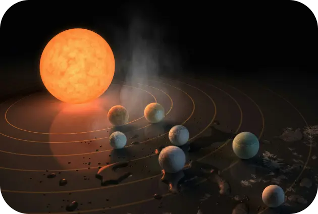
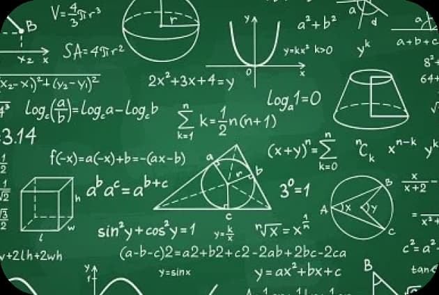
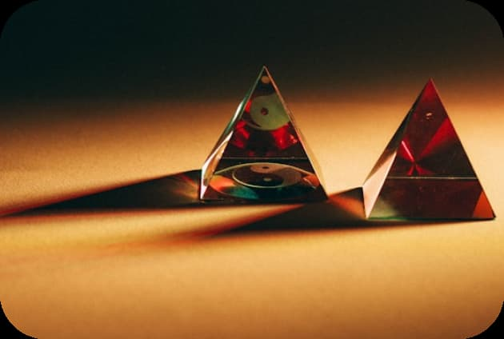
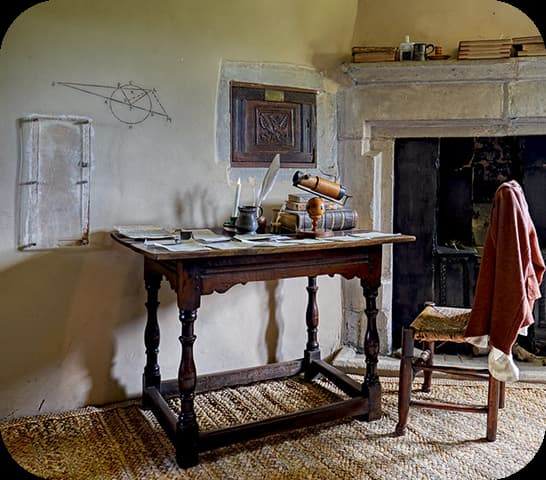
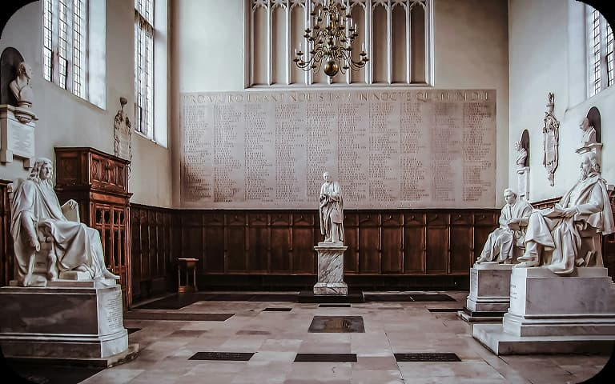
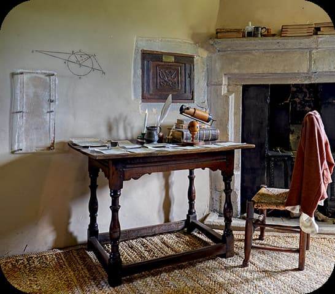
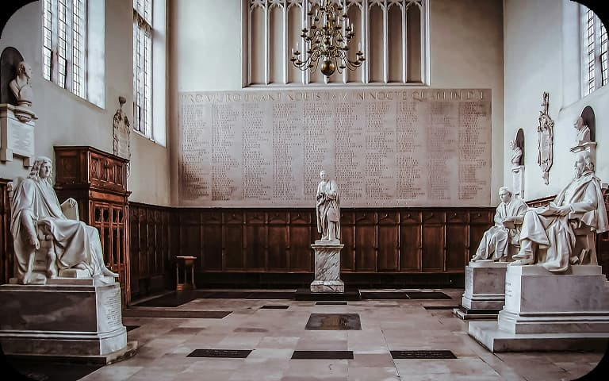

My Discoveries
People often talk about the apple that fell from a tree, but my work
on gravity was only the beginning. Here are some of my greatest
contributions to science:
Laws of Motion
I described how objects move, setting the foundation for physics.

Law of Universal Gravitation
I proved that every object in the universe attracts every other
object.

Calculus
A new form of mathematics that helps us understand change.

Optics
I discovered that white light is made up of many colors using a
simple prism.
My Greatest Works

In 1687, I published my most famous book, Principia Mathematica.
In it, I laid down the laws of motion and gravitation. Later, in
1704, I wrote Opticks, exploring the nature of light and color. My
writings continue to inspire scientists today.
My Legacy
Even centuries after my time, my discoveries remain essential in
physics, engineering, and space travel. Without my laws, we wouldn't
be able to land on the Moon or explore distant planets!
Support the Legacy of Discovery
My work has sparked centuries of scientific discovery, shaping the way
we understand the universe. By helping to preserve my contributions,
you are investing in the future of human knowledge.
Donate
Support ongoing research and educational projects inspired by my
discoveries.
Volunteer
Local museums and science centers to ignite curiosity in the minds
of future scientists.
 


